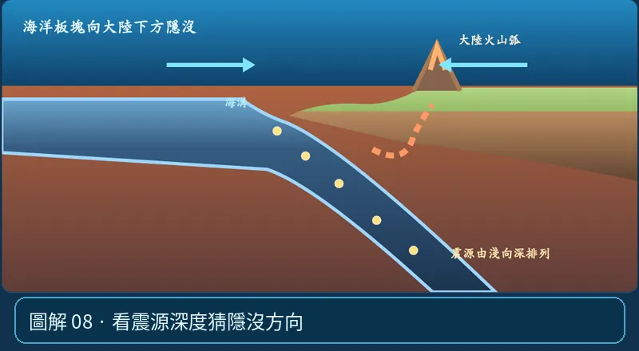

第 05 單元｜圖解 8/8｜課本 p.80–88
看震源深度猜隱沒方向
地震若沿一條向下傾斜的帶狀區域，由淺源一路到深源，常是隱沒板塊的地震分布；淺端靠海溝，深端指向板塊隱沒的方向。
① 看一眼② 操作圖③ 自己推理④ 揭開解答
🔬 這張圖，請自己動手試
操作圖上方的頁籤、滑桿或按鈕；圖片也能左右滑動放大觀看。
互動圖解 · 看震源深度猜隱沒方向

原創 SVG 地科教學模型，方便理解，非真實比例、非即時地震資料；互動無法載入時仍有靜態圖。
STEP 01 · 先觀察
👀 眼睛先找線索
沿下沉板塊上的黃色震源點由淺到深依序連起來，看看整條線朝哪邊傾斜。
💡 為什麼是這樣？
這條斜向震源帶稱隱沒帶中的瓦達蒂—班尼奧夫帶。淺震靠海溝，往板塊隱沒方向可能出現較深的地震。
🎯 換個問法想一題
震源從左側淺逐漸變成右側深，隱沒方向可能往哪邊？
我想好了，點開看答案 ↓
推論板塊朝右側下傾隱沒。
⚡ 一句記住：震源一排往下